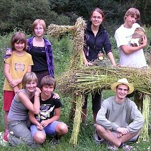

Ročník 2008
Poklad Inků & Krtkova dobrodružství, Ostrovec 2008

Poklad Inků
Jako vždy jsme slibovali překvapení a kdo s námi jel, nebyl zklamaný. Vyrazili jsme do skalních měst okolo Machu Pichu až v daleké Jižní Americe, abychom se pokusili nalézt bájný Poklad Inků. Pět skupin hledačů vyrazilo na cesty a my jsme věděli, že jen jediná dorazí až na vrchol posvátné hory a modlili jsme se, aby ztráty na životech byly co nejmenší.
Brzy se opravdu rozpoutal lítý boj mezi všemi skupinami, jak o tom nakonec svědčí i jejich bojová jména: strašlivý „Hněv boha Šaliny‘“, líté „Divoké šelmy“,tajemné a nečitelné „Lamy lloqueho Yupanaquiho“, zlověstní „The Canibals“ i španělská „Cortézova elitní jednotka“, ti všichni se vrhli do boje o poklad, po stopách boha slunce, bez ohledu na oběti a ztráty. Často se stávalo, že narazili na houževnatý odpor domorodých kmenů a to zejména při průchodu Táborem duchů, kde byli napadávání zběsilým zombiesprávcem. NA skalách nacházeli symboly boha slunce, luštili tajemné incké písmo kipu, bloudili labyrintem, uvařili a ochutnali božskou manu, aby nakonec jen jedni z nich stanuli před oltářem posledního Inky a mohli se radovat ze zlatého pokladu. Těmi šťastnými byli nakonec Divoké šelmy, ale to snad ani nebylo rozhodující – zvítězili všichni, kdo přežili…
Krtkova dobrodružství
I ti nejmenší měli svou hru. V lesích kolem řeky Skalice se proháněl krtek. A ne nějaký obyčejný, byl to ten náš! Krteček! Kamarádi Ježek, Myška, Zajíc a Sova měli starosti, na které Krteček sám nestačil. Naštěstí tu byl tým odvážných Krtečků, připravených se spolu se svými vedoucími vydat na velké dobrodružství. Společně tak zvládli najít ukradený pařez pana Zajíce, odhalili rodinné tajemství paní Myšky, nebo pomohli panu Ježkovi postavit nový domek. Vyřešili dokonce i tak záludné úkoly, že jim Krteček za odměnu předal svůj poklad a pozval všechny do tajemného lesa plného pohádkových bytostí.